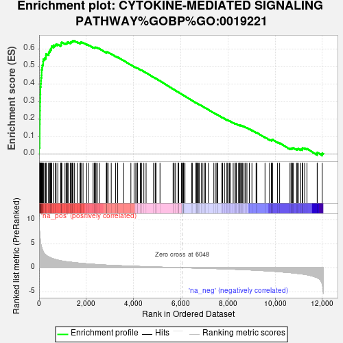
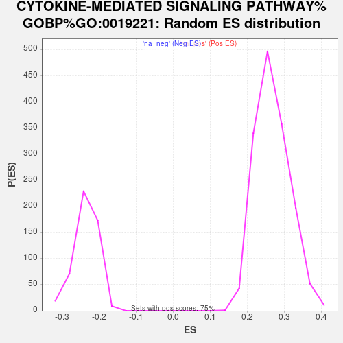

| Dataset | NHBE_SARSCoV2_ranks |
| Phenotype | NoPhenotypeAvailable |
| Upregulated in class | na_pos |
| GeneSet | CYTOKINE-MEDIATED SIGNALING PATHWAY%GOBP%GO:0019221 |
| Enrichment Score (ES) | 0.6460168 |
| Normalized Enrichment Score (NES) | 2.4075153 |
| Nominal p-value | 0.0 |
| FDR q-value | 0.0 |
| FWER p-Value | 0.0 |

| SYMBOL | RANK IN GENE LIST | RANK METRIC SCORE | RUNNING ES | CORE ENRICHMENT | |
|---|---|---|---|---|---|
| 1 | IL36G | 2 | 9.425 | 0.0350 | Yes |
| 2 | IFI27 | 25 | 7.449 | 0.0609 | Yes |
| 3 | IL6 | 26 | 7.388 | 0.0884 | Yes |
| 4 | MX1 | 27 | 7.363 | 0.1159 | Yes |
| 5 | IL1B | 28 | 7.157 | 0.1425 | Yes |
| 6 | IRAK2 | 29 | 7.087 | 0.1690 | Yes |
| 7 | BIRC3 | 32 | 7.046 | 0.1950 | Yes |
| 8 | OAS1 | 35 | 6.895 | 0.2206 | Yes |
| 9 | OAS2 | 36 | 6.847 | 0.2461 | Yes |
| 10 | OAS3 | 39 | 6.666 | 0.2708 | Yes |
| 11 | CSF3 | 40 | 6.651 | 0.2956 | Yes |
| 12 | CSF2 | 47 | 6.102 | 0.3178 | Yes |
| 13 | NFKBIA | 48 | 6.099 | 0.3406 | Yes |
| 14 | IFITM1 | 56 | 5.709 | 0.3612 | Yes |
| 15 | IL1A | 57 | 5.543 | 0.3819 | Yes |
| 16 | PDGFB | 70 | 5.180 | 0.4002 | Yes |
| 17 | TNF | 80 | 4.793 | 0.4173 | Yes |
| 18 | SOCS3 | 84 | 4.695 | 0.4346 | Yes |
| 19 | STAT1 | 103 | 4.281 | 0.4490 | Yes |
| 20 | NFKB1 | 107 | 4.220 | 0.4645 | Yes |
| 21 | IFITM3 | 108 | 4.218 | 0.4802 | Yes |
| 22 | IKBKE | 129 | 3.922 | 0.4931 | Yes |
| 23 | F3 | 139 | 3.759 | 0.5064 | Yes |
| 24 | IL7R | 170 | 3.406 | 0.5165 | Yes |
| 25 | STAT5A | 171 | 3.402 | 0.5292 | Yes |
| 26 | TRAF3 | 179 | 3.362 | 0.5412 | Yes |
| 27 | IFNGR1 | 240 | 2.824 | 0.5466 | Yes |
| 28 | LYN | 285 | 2.636 | 0.5527 | Yes |
| 29 | IRAK3 | 289 | 2.617 | 0.5622 | Yes |
| 30 | DUOX2 | 297 | 2.598 | 0.5713 | Yes |
| 31 | STAT2 | 407 | 2.228 | 0.5704 | Yes |
| 32 | OSMR | 411 | 2.214 | 0.5784 | Yes |
| 33 | IFITM2 | 433 | 2.183 | 0.5848 | Yes |
| 34 | IFNGR2 | 467 | 2.109 | 0.5899 | Yes |
| 35 | IL33 | 476 | 2.098 | 0.5970 | Yes |
| 36 | SP100 | 518 | 1.986 | 0.6010 | Yes |
| 37 | TNIP2 | 524 | 1.971 | 0.6079 | Yes |
| 38 | EREG | 533 | 1.952 | 0.6145 | Yes |
| 39 | IRF1 | 622 | 1.815 | 0.6138 | Yes |
| 40 | MAPK3 | 624 | 1.810 | 0.6205 | Yes |
| 41 | SRC | 690 | 1.709 | 0.6214 | Yes |
| 42 | HCLS1 | 719 | 1.668 | 0.6252 | Yes |
| 43 | TRAF2 | 793 | 1.572 | 0.6249 | Yes |
| 44 | CIB1 | 913 | 1.442 | 0.6203 | Yes |
| 45 | IL4R | 934 | 1.420 | 0.6239 | Yes |
| 46 | CXCL10 | 935 | 1.418 | 0.6292 | Yes |
| 47 | STAT3 | 937 | 1.416 | 0.6344 | Yes |
| 48 | MYD88 | 965 | 1.393 | 0.6373 | Yes |
| 49 | CLCF1 | 1098 | 1.284 | 0.6309 | Yes |
| 50 | HAX1 | 1151 | 1.246 | 0.6312 | Yes |
| 51 | IFNAR2 | 1185 | 1.217 | 0.6329 | Yes |
| 52 | TRIM65 | 1196 | 1.211 | 0.6366 | Yes |
| 53 | HDAC4 | 1230 | 1.192 | 0.6383 | Yes |
| 54 | RAF1 | 1326 | 1.141 | 0.6345 | Yes |
| 55 | STAT6 | 1336 | 1.135 | 0.6380 | Yes |
| 56 | LRP8 | 1368 | 1.121 | 0.6395 | Yes |
| 57 | CSNK2B | 1405 | 1.096 | 0.6406 | Yes |
| 58 | P4HB | 1421 | 1.085 | 0.6434 | Yes |
| 59 | ILK | 1438 | 1.075 | 0.6460 | Yes |
| 60 | IL15RA | 1502 | 1.046 | 0.6446 | No |
| 61 | JAK1 | 1612 | 0.992 | 0.6391 | No |
| 62 | AKT1 | 1733 | 0.927 | 0.6324 | No |
| 63 | IL17RC | 1748 | 0.918 | 0.6347 | No |
| 64 | MKKS | 1766 | 0.909 | 0.6366 | No |
| 65 | RELA | 1778 | 0.904 | 0.6391 | No |
| 66 | OXSR1 | 1862 | 0.870 | 0.6353 | No |
| 67 | IRAK1 | 2015 | 0.807 | 0.6255 | No |
| 68 | TRAF3IP2 | 2086 | 0.775 | 0.6225 | No |
| 69 | PTK2B | 2287 | 0.710 | 0.6082 | No |
| 70 | ADIPOR2 | 2336 | 0.692 | 0.6068 | No |
| 71 | TYK2 | 2358 | 0.683 | 0.6075 | No |
| 72 | IKBKB | 2381 | 0.673 | 0.6082 | No |
| 73 | ADIPOR1 | 2412 | 0.664 | 0.6081 | No |
| 74 | EPOR | 2464 | 0.647 | 0.6063 | No |
| 75 | EIF5A | 2555 | 0.613 | 0.6009 | No |
| 76 | CXCL17 | 2847 | 0.533 | 0.5784 | No |
| 77 | CEACAM1 | 2861 | 0.528 | 0.5793 | No |
| 78 | TP53 | 2868 | 0.527 | 0.5807 | No |
| 79 | CISH | 2875 | 0.525 | 0.5822 | No |
| 80 | SIN3A | 2924 | 0.512 | 0.5800 | No |
| 81 | PTPRJ | 3056 | 0.484 | 0.5708 | No |
| 82 | SOCS2 | 3242 | 0.445 | 0.5568 | No |
| 83 | MAP3K7 | 3327 | 0.425 | 0.5513 | No |
| 84 | OASL | 3330 | 0.424 | 0.5527 | No |
| 85 | PTPN11 | 3584 | 0.373 | 0.5328 | No |
| 86 | CTR9 | 3888 | 0.315 | 0.5084 | No |
| 87 | JAK2 | 4023 | 0.290 | 0.4982 | No |
| 88 | IFNAR1 | 4097 | 0.279 | 0.4930 | No |
| 89 | TBKBP1 | 4160 | 0.265 | 0.4888 | No |
| 90 | SH2B3 | 4162 | 0.265 | 0.4897 | No |
| 91 | UGCG | 4289 | 0.243 | 0.4800 | No |
| 92 | PLP2 | 4326 | 0.237 | 0.4778 | No |
| 93 | TRAF1 | 4331 | 0.236 | 0.4784 | No |
| 94 | MAVS | 4437 | 0.222 | 0.4703 | No |
| 95 | IL1R1 | 4532 | 0.209 | 0.4632 | No |
| 96 | ACTN4 | 4848 | 0.159 | 0.4372 | No |
| 97 | TOLLIP | 4918 | 0.147 | 0.4319 | No |
| 98 | IL18R1 | 4942 | 0.144 | 0.4305 | No |
| 99 | RPS6KA4 | 4951 | 0.143 | 0.4304 | No |
| 100 | RIPK1 | 5121 | 0.120 | 0.4166 | No |
| 101 | IFNLR1 | 5676 | 0.043 | 0.3700 | No |
| 102 | TNFRSF1A | 5720 | 0.038 | 0.3665 | No |
| 103 | IL22RA1 | 5777 | 0.031 | 0.3619 | No |
| 104 | STAT5B | 5885 | 0.017 | 0.3529 | No |
| 105 | GPR75 | 5892 | 0.016 | 0.3525 | No |
| 106 | NR2C2 | 5901 | 0.016 | 0.3519 | No |
| 107 | PRKACA | 5907 | 0.015 | 0.3515 | No |
| 108 | IL1RL1 | 6027 | 0.002 | 0.3415 | No |
| 109 | TRAF6 | 6045 | 0.000 | 0.3400 | No |
| 110 | TBK1 | 6083 | -0.004 | 0.3369 | No |
| 111 | IL12RB2 | 6102 | -0.007 | 0.3354 | No |
| 112 | TTC1 | 6110 | -0.007 | 0.3349 | No |
| 113 | LEP | 6119 | -0.008 | 0.3342 | No |
| 114 | RRAGA | 6124 | -0.009 | 0.3339 | No |
| 115 | TMSB4X | 6179 | -0.015 | 0.3294 | No |
| 116 | CBL | 6462 | -0.049 | 0.3058 | No |
| 117 | COMMD7 | 6490 | -0.053 | 0.3037 | No |
| 118 | APPL2 | 6641 | -0.072 | 0.2913 | No |
| 119 | NUMBL | 6656 | -0.075 | 0.2904 | No |
| 120 | PYCARD | 6657 | -0.075 | 0.2907 | No |
| 121 | IRF5 | 6685 | -0.078 | 0.2887 | No |
| 122 | LIFR | 6709 | -0.082 | 0.2871 | No |
| 123 | RBM15 | 6719 | -0.084 | 0.2866 | No |
| 124 | CCL26 | 6764 | -0.089 | 0.2833 | No |
| 125 | SYK | 6781 | -0.092 | 0.2822 | No |
| 126 | IL6ST | 6882 | -0.104 | 0.2742 | No |
| 127 | CCL5 | 6912 | -0.108 | 0.2722 | No |
| 128 | WBP1L | 6985 | -0.118 | 0.2665 | No |
| 129 | RPS6KA5 | 6993 | -0.119 | 0.2664 | No |
| 130 | JAK3 | 7043 | -0.124 | 0.2627 | No |
| 131 | BBS4 | 7171 | -0.141 | 0.2525 | No |
| 132 | EDAR | 7402 | -0.174 | 0.2337 | No |
| 133 | EGR1 | 7491 | -0.189 | 0.2270 | No |
| 134 | AZI2 | 7532 | -0.196 | 0.2244 | No |
| 135 | FER | 7570 | -0.201 | 0.2220 | No |
| 136 | JAGN1 | 7741 | -0.229 | 0.2085 | No |
| 137 | IL20RA | 7774 | -0.234 | 0.2067 | No |
| 138 | IL17RA | 7852 | -0.248 | 0.2011 | No |
| 139 | MAPK1 | 7960 | -0.267 | 0.1931 | No |
| 140 | CHUK | 7962 | -0.268 | 0.1940 | No |
| 141 | TANK | 8008 | -0.277 | 0.1912 | No |
| 142 | PTPN6 | 8067 | -0.289 | 0.1874 | No |
| 143 | BBS2 | 8097 | -0.294 | 0.1861 | No |
| 144 | IL10RB | 8221 | -0.320 | 0.1769 | No |
| 145 | DUOX1 | 8295 | -0.335 | 0.1720 | No |
| 146 | TRADD | 8300 | -0.337 | 0.1729 | No |
| 147 | CEBPA | 8338 | -0.345 | 0.1711 | No |
| 148 | CARD14 | 8353 | -0.349 | 0.1712 | No |
| 149 | SMAD4 | 8449 | -0.367 | 0.1645 | No |
| 150 | LEPR | 8487 | -0.373 | 0.1628 | No |
| 151 | STAT4 | 8493 | -0.374 | 0.1638 | No |
| 152 | BIRC2 | 8514 | -0.378 | 0.1635 | No |
| 153 | TXNDC17 | 8547 | -0.386 | 0.1622 | No |
| 154 | TSLP | 8591 | -0.395 | 0.1601 | No |
| 155 | IL31RA | 8622 | -0.404 | 0.1591 | No |
| 156 | SOCS4 | 8683 | -0.416 | 0.1555 | No |
| 157 | IFNE | 8732 | -0.425 | 0.1531 | No |
| 158 | TREM2 | 8803 | -0.440 | 0.1488 | No |
| 159 | IL11 | 8908 | -0.465 | 0.1418 | No |
| 160 | CX3CL1 | 9015 | -0.489 | 0.1347 | No |
| 161 | IL20RB | 9191 | -0.530 | 0.1219 | No |
| 162 | IL11RA | 9226 | -0.541 | 0.1210 | No |
| 163 | TRAF5 | 9569 | -0.641 | 0.0945 | No |
| 164 | TNFRSF11A | 9762 | -0.699 | 0.0809 | No |
| 165 | IL13RA1 | 9842 | -0.722 | 0.0770 | No |
| 166 | SOS1 | 9850 | -0.724 | 0.0791 | No |
| 167 | APPL1 | 9873 | -0.731 | 0.0800 | No |
| 168 | IL18 | 9884 | -0.736 | 0.0818 | No |
| 169 | DAB2IP | 10100 | -0.808 | 0.0667 | No |
| 170 | SOCS5 | 10188 | -0.844 | 0.0625 | No |
| 171 | IL1RAP | 10628 | -1.031 | 0.0293 | No |
| 172 | STK39 | 10675 | -1.053 | 0.0294 | No |
| 173 | LIMS1 | 10690 | -1.060 | 0.0321 | No |
| 174 | IRAK4 | 10734 | -1.084 | 0.0326 | No |
| 175 | EDA | 10771 | -1.104 | 0.0336 | No |
| 176 | SIRT1 | 10906 | -1.181 | 0.0267 | No |
| 177 | GNAI1 | 10946 | -1.199 | 0.0279 | No |
| 178 | FOXO3 | 10980 | -1.218 | 0.0297 | No |
| 179 | EDA2R | 11085 | -1.279 | 0.0257 | No |
| 180 | FOXC1 | 11144 | -1.317 | 0.0257 | No |
| 181 | IRS1 | 11146 | -1.318 | 0.0305 | No |
| 182 | IL15 | 11162 | -1.330 | 0.0342 | No |
| 183 | WNK1 | 11248 | -1.403 | 0.0323 | No |
| 184 | IL16 | 11346 | -1.477 | 0.0296 | No |
| 185 | PIK3R1 | 11778 | -2.074 | 0.0009 | No |
| 186 | GHR | 11784 | -2.089 | 0.0083 | No |
| 187 | IL6R | 11993 | -3.499 | 0.0038 | No |
